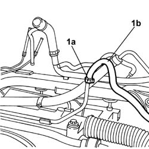
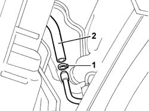

4130B82 Rubber PIPE from rigid return pipe to fluid reservoir - Includes bleeding air
- Path
- Procedures > 41 STEERING > 4130 POWER ASSISTED STEERING > 4130B POWER STEERING HYDRAULIC SYSTEM > 4130B82 Rubber PIPE from rigid return pipe to fluid reservoir - Includes bleeding air
- Kind
- repair procedure (removal / refitting; the operation number is the code)
- Applies to
- all engines; all production periods
- Interactive page
- https://sloeber94.github.io/elrnDB-lThss/en/#/174253
Applies to: engines: 3.0 V6, 3.2 V6; all production periods
 Removing
Removing
 Refitting
RefittingSee in Op. 4410D10 Front suspension FRAME - R.R.
1. Open the retaining band (1a) and remove the rubber pipe (1b).

Applies to: engines: 3.0 V6, 3.2 V6; all production periods
Refitting
Removing- Connect the pipe and close the retaining band.
Applies to: engines: 2.0 TB, 2.4 20V, 2.4 JTD 10V, 2.4 JTD 20V; all production periods
Removing
RefittingSee in Op. 7040D50 ENGINE COMPARTMENT UPPER SOUND INSULATION SHIELD - R.R.
See in Op. 5050B34 WINDSCREEN WIPER ARM(S) for front windscreen wiper complete with blade
See in Op. 7055A18 Winsdcreen base TRIM - R.R.
See in Op. 4130B10 POWER ASSISTED STEERING FLUID RESERVOIR - R.R. - Includes bleeding air
- Raise the lift.
See in Op. 7055B54 PROTECTION/GUARD under engine - R.R.
1. Break the band securing the rigid pipe to the rubber pipe.
- Lower the vehicle.
2. Remove the rubber pipe from the top of the engine comparment.

Applies to: engines: 2.0 TB, 2.4 20V, 2.4 JTD 10V, 2.4 JTD 20V; all production periods
Refitting
Removing- Fit the rubber pipe and position the lower end near the heat exchanger rigid pipe.
- Raise the lift.
- Connect the rubber pipe to the rigid return section.
See in Op. 7055B54 PROTECTION/GUARD under engine - R.R.
- Lower the lift.
See in Op. 4130B10 POWER ASSISTED STEERING FLUID RESERVOIR - R.R. - Includes bleeding air
See in Op. 7055A18 Winsdcreen base TRIM - R.R.
See in Op. 5050B34 WINDSCREEN WIPER ARM(S) for front windscreen wiper complete with blade
See in Op. 7040D50 ENGINE COMPARTMENT UPPER SOUND INSULATION SHIELD - R.R.
Topics linked from this page (6)
- 4130B10 POWER ASSISTED STEERING FLUID RESERVOIR - R.R. - Includes bleeding air
- 4410D10 Front suspension FRAME - R.R.
- 5050B34 WINDSCREEN WIPER ARM(S) for front windscreen wiper complete with blade
- 7040D50 ENGINE COMPARTMENT UPPER SOUND INSULATION SHIELD - R.R.
- 7055A18 Winsdcreen base TRIM - R.R.
- 7055B54 PROTECTION/GUARD under engine - R.R.